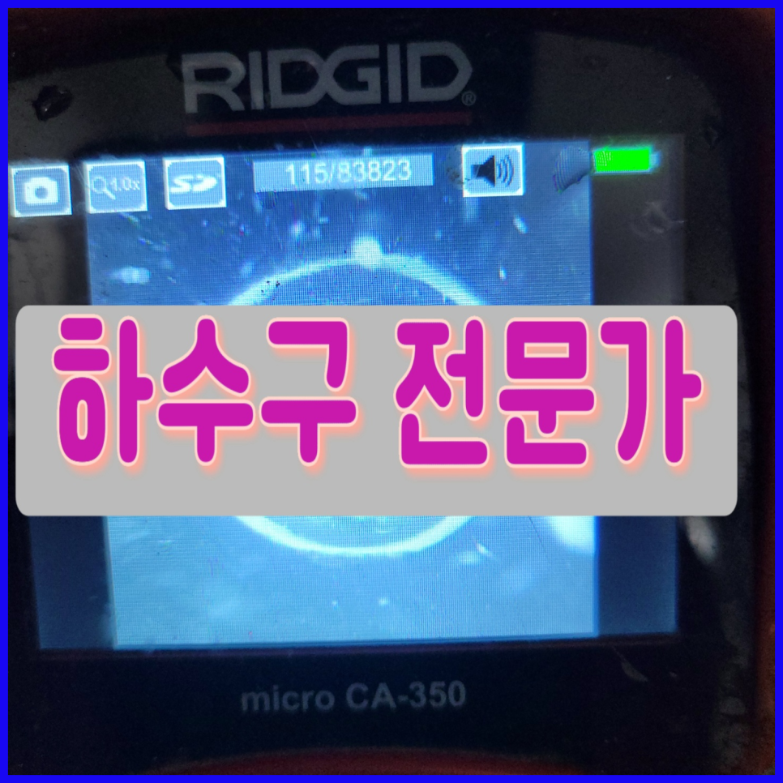
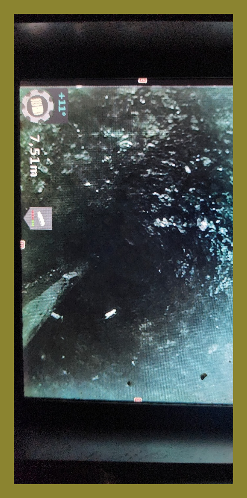
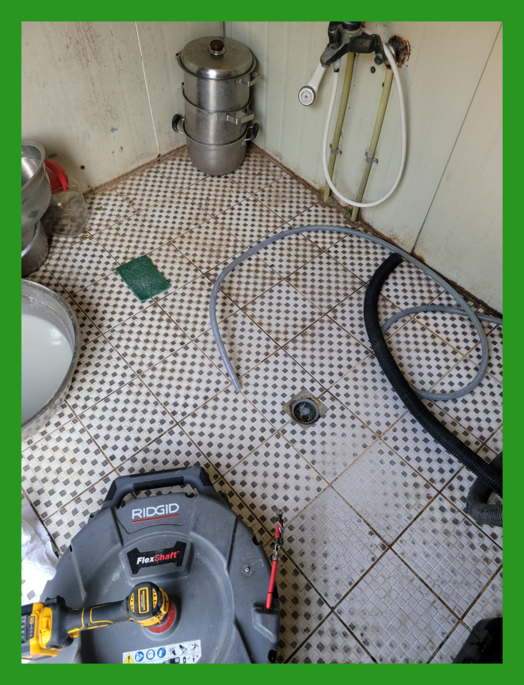
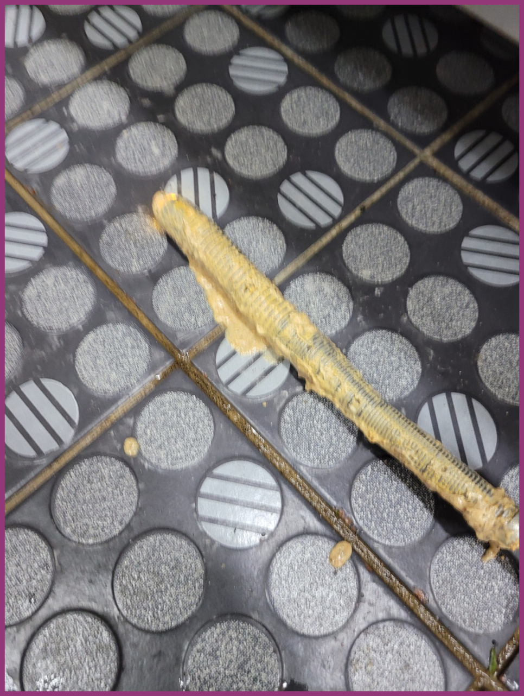
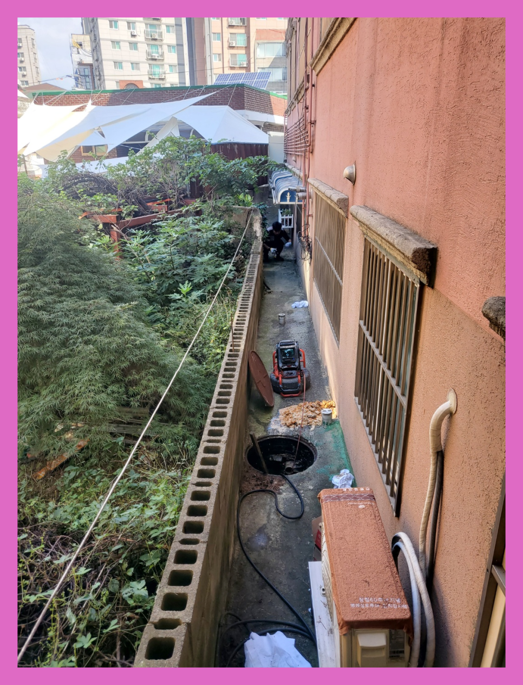
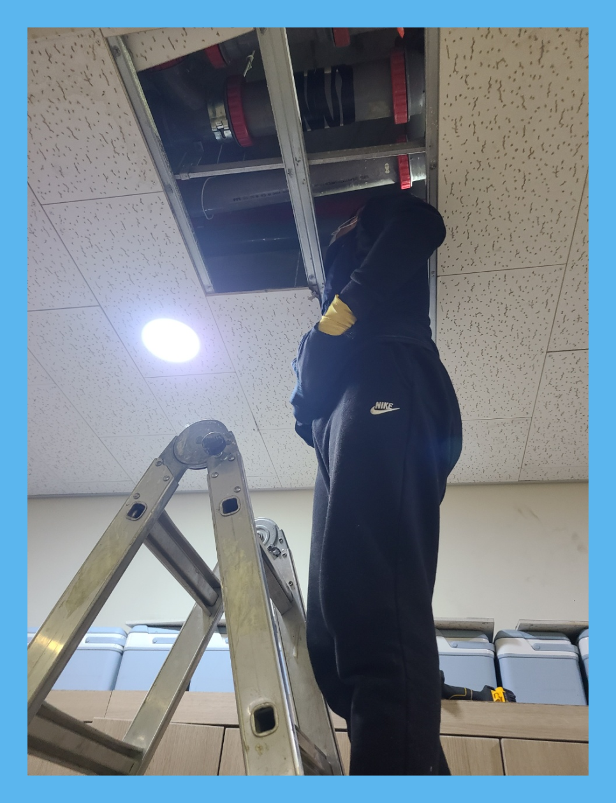
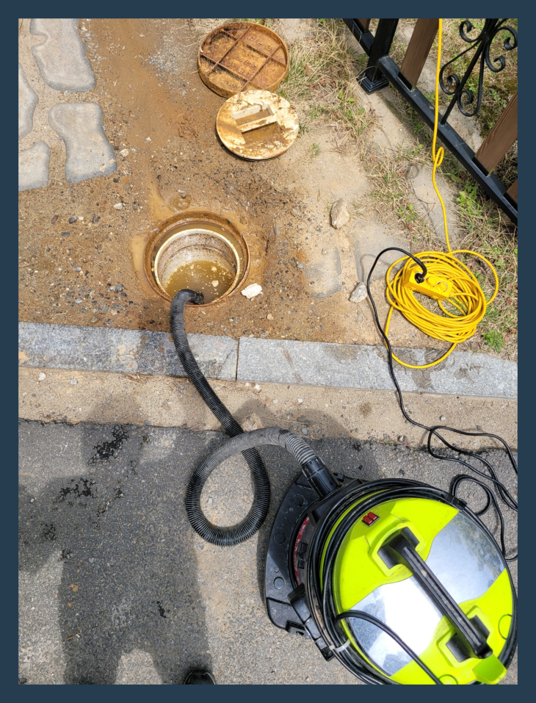

🏠 이천시 마장면 세탁실하수구역류 덕평리 하수구막힘뚫는업체
용인 싱크대막힘 전문 시공 후기

📋 작업 개요
- 위치: 용인
- 서비스 유형: 싱크대막힘, 변기막힘, 하수구막힘, 배관막힘, 맨홀막힘, 역류해결, 뚫는업체, 배관청소, 고압세척
- 작업 일시: 2023. 9. 25. 23:37
- 업체명: 하수구수사대 (010-5615-2118)
🔍 문제 상황
안녕하세요.
설비전문업체 "하수구수사대"를 찾아주셔서 감사합니다.
안녕하세요! 어디든 상관없이 배수구막힘 현장이라면 로켓방문 출동으로 누구보다 신속하고 정확하게 속시원히 뚫어드리겠습니다.
써버린 물들이 배수구를 지나서 흐르지 못하면 막힘이나 역류증상으로 문제가 생기기 마련입니다.

🔎 원인 분석
💡 전문가 진단: 이천시 마장면 세탁실하수구역류 덕평리 하수구막힘뚫는업체
이천시 마장면 세탁실하수구역류 덕평리 하수구막힘뚫는업체
상태가 더욱심각해지면 물이 새는 증상이 나오게 되는데요 안고치고 방치한다면 여러배관에 같은 증상이 나타나거나 각종 냄새들이 온 집안과 공간을 괴롭히게 됩니다.
무조건 저렴한 업체를 이용하시는게 정답이 아닌 이유가 바로 이것입니다. 배수구 대부분 가격을 미리 정해놓고 출동하는곳들은 어떤 상황이든 간에 같은 작업만 해주고 철수 합니다. 받은 돈 만큼만 일하기 때문입니다.
대다수분들이 배관이 막힘이 발생되면 그냥 혼자 하다가 처리를 하지못하고 저희 업체를 찾게됩니다. 업체 선정을 잘해야 고객님의 피해를 줄일 수가 있습니다. 배출구전문 장비를 보유하고 있는지 배관 구조를 확실하게 파악할줄 알아야 합니다.
믿고 부른 하수업체가 제대로 뚫었다면서 철수했는데 얼마 지나지 않아서 똑같은 증상이 재발했다는 경우도 어렵지 않게 봅니다. 양심적인 업체였다면 이럴 때 당연히 다시 가서 뚫어주어야만 하는 것입니다.

🔧 작업 과정
배출구구조와 막힘 정도는 현장에따라 다르기 때문에 기본 작업비용이나 기본적이 소요시간 정도는 상담을 통해 안내가 가능하지만 추가적인 작업에 필요한 경우에는 꼭 현장 견적을 통해 안내드리는 것이 정확합니다.
보통 고압세척이라고 하면 큰 건물 배관이나 맨홀에서 필요한 작업이라고 생각하시는 분들이 계신데 실제로 가정집 싱크대나하수에서도 간편하게 작업할 수 있는 다양한 장비가 있습니다
방문하여 현장을 살펴보니 외관상으로는 문제가 되보이는 게 없었지만 내시경 등을 통해 배관의 내부를 살펴보았을 때 심각한 상황이었습니다.평소에는 괜찮았던 퇴수구 갑자기 막히거나 역류하게 된다면 누구나 당황스러우실겁니다.
배출구 내부 상태를 파악해가면서 작업을 진행하였습니다. 고압세척은 노즐을 이용하여 강한 수압으로 배관 내부의 이물질들을 세척하는 장비로 배관의 내부를 깨끗하게 작업을 할 수 있기 때문에 이물질 제거에 널리 사용하고 있는 장비라고 할 수 있습니다.
한국에는 막혀버리배관을 해결하기위한 용품등등을 사실수있는데요. 어떤데는 배관공이 이용하고있는 비싼기계들을 간소화시켜서 팔고있어요.더불어서 퇴수구막힌것을 뚫어주는세정제도 모든분들이구매 하시고있는데요.
저희업체는연락 주시자마자 그어떠한곳도 늦어도1시간안에 출동가고있으니 반드시기억 해주셨으면좋겠습니다. 하수막힘 걱정되는생각을 해결되길바랍니다 문의가필요하시다면 아래보이시는 연락처를 확인해주시면됩니다.
어쩌다가한번 막혀버린게아니여도 배수구 심각한악취가 퍼지게되는 문제가발생하게되는데요.이러한경우에는 수리하는곳마다 이유가서로틀리기에 정확하게살펴본후 고치고있답니다
경력자들로 모여있어서 다른곳보다 순식간에출장갑니다.몇시든지 아무때나문의 하시면된답니다.늦어질수록 불안해지시는게 의뢰자분들이여서 불안한느낌을 뚫어버리기위해서 순식간에출동한다음 하수 고장난데를 수리하고있습니다.


✅ 작업 완료
배관청소는 플렉스샤프트라는 장비를 사용하는데요 와이어 앞쪽에 체인이 회전을하면서 하수배관벽면에 붙어있는 기름덩어리를 분쇄해주는 방식입니다. 회전반경이 배관크기보다 작기때문에 배관에 무리를 주지않고 작업이 가능해요.
#하수구막힘 #하수구뚫음 #하수구역류 #씽크대막힘 #싱크대역류 #오수관막힘 #하수구청소 #욕실하수구막힘 #변기막힘 #하수구뚫는비용 #싱크대수리 #화장실막힘




⚠️ 주방 싱크대 배관 막힘 예방 수칙
- ✅ 기름기가 묻은 식기나 프라이팬은 설거지 전 키친타올로 반드시 기름때를 닦아내세요.
- ✅ 주기적으로 싱크대 개수대에 뜨거운 물을 가득 받아 한 번에 내려 배관 내부 기름을 씻어내세요.
- ✅ 배수구 거름망을 미세한 필터로 사용하시고 음식물 찌꺼기가 틈으로 새어 들지 않게 관리하세요.
- ✅ 베이킹소다와 식초를 뜨거운 물과 함께 일주일에 한 번씩 부어주면 배관 살균과 막힘 예방에 좋습니다.
💡 핵심 정리
- 확실한 장비 작업(내시경 점검 및 샤프트 스케일링)으로 원인을 뿌리 뽑습니다.
- 작업 후 1년 이내에 동일한 부위 재발 시 100% 무상 A/S 서비스를 보장합니다.
- 서울 · 경기 · 인천 전 지역에 24시간 언제든 긴급 출동할 수 있도록 항시 대기 중입니다.
❓ 자주 묻는 질문 (FAQ)
🚨 용인 싱크대막힘 문제로 고민이신가요?
정확한 원인 진단과 확실한 시공으로 재발 없는 해결을 약속드립니다.
24시간 긴급 출동 | 서울 · 경기 · 인천 전지역 | 1년 내 재발 시 무상 A/S